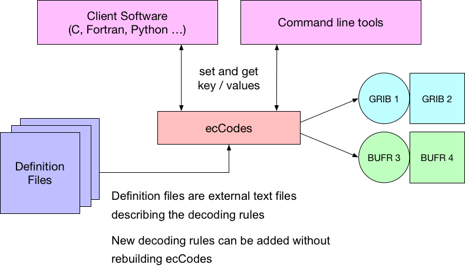

1. GRIB 和 ecCodes 介绍
什么是GRIB？
GRIB是由世界气象组织 (World Meteorological Organization，WMO)维护的二进制文件格式。 用于编码由数值天气预报模式(Numerical Weather Prediction models)生成的数据。
地球二维网格
GRIB 最初是 GRIdded Binary 的缩写，后来被扩展为 General Regularly-distributed Information in Binary form。
GRIB文件长什么样？
GRIB 格式是面向二进制的数据交换格式，与文本文件等人类可读的文件不同，必须由符合WMO标准规则的软件解码。
下图是使用16进制编辑器打开 GRIB 文件的示例，除了最开始4个字节外，其余部分都无法解析成文本，后面将会看到前4个字节对应的 ASCII 编码内容 GRIB 正是 GRIB 文件的标志。

WMO 二进制编码
WMO 提供对 GRIB 编码标准的完整描述文件 Manual on Codes。
这是 WMO 二进制编码 GRIB 的唯一官方文档，可以从 WMO 的官网上获取。
http://www.wmo.int/pages/prog/www/WMOCodes.html
每三年发布完整的说明文档。
每年两次发布作为新版本的代码表格，代码表格是说明文档的一部分。
最新版本的表格请访问 WMO 网站
http://www.wmo.int/pages/prog/www/WMOCodes/WMO306_vI2/LatestVERSION/LatestVERSION.html
GRIB 版本1和2
目前可以使用两个不同版本的 GRIB 编码标准（版本1和版本2）。两个版本的编码规则相似，但他们的实现方式完全不同。

GRIB结构
GRIB是一种基于表格的存储格式，下面简单介绍 GRIB 的文件结构，详情请查阅相关资料。
一个 GRIB 文件由一个或多个 GRIB 消息构成。
每个消息包含多个部分（sections）构成。
数据描述符是自定义的，相关信息保存在 GRIB 的表格和模板中。
单个文件可以混合保存版本1和版本2。

GRIB 1与GRIB 2的主要区别
GRIB 1 和 GRIB 2 的结构不同，他们都由 section 构成，但代表不同的含义。
在 GRIB 2 中，多个变量使用更高的精度定义。
- GRIB 1 的经纬度使用 mili-degrees
- GRIB 2 的经纬度使用 micaro-degrees
GRIB 2 的经度值必须在0到360度之间。
两个版本的变量编码也不一样。GRIB 2 中数据的信息（变量、时间、统计值、网格等）基于模板（template）和表格（table）描述，更加灵活，但同时也更加复杂。
历史数据
GRIB 1 是 遗留的 WMO 编码，已不再被 GTS exchange 接收。新版本的表格和模板只面向 GRIB 2。
GRIB 2 在 ECMWF 的使用
从2011年5月18日起，HRES的所有模式层变量都使用 GRIB 2 编码。
大部分地面层和气压层变量都使用 GRIB 1 编码，部分近期引入的地面变量使用 GRIB 2 编码（例如 ptype）。
未来会将 GRIB 1 的要素迁移到 GRIB 2。
不会被迁移
- 海浪模式
- The System-4 seasonal forecast model
- ERA-Interim
ecCodes 介绍
ecCodes 是有 ECMWF 开发的解码和编码工具包，用于处理下面的数据格式：
- WMO FM-92 GRIB 版本1和2
- WMO FM-94 BUFR 版本3和4
- WMO GTS abbreviated header
本教程将只介绍 GRIB 格式。
ecCodes 库包括：
- API接口
- 一组命令行工具（GRIB Tools），提供对数据的便捷操控功能
- 提供工具库主要功能的 Fortan 90，C 和 Python 接口
ecCodes 为用户提供高层的访问方式，隐藏 GRIB 消息的二进制层， 提供方便可靠的方式编码和解码 GRIB 1 和 GRIB 2 的消息， 使用同样的函数编解码两个版本的 GRIB 消息，同时 ecCodes 可以很容易地更新到最新版本的 GRIB 模板和表格。
与 GRIB-API 的关系
ecCodes 的前身就是的 GRIB-API，ecCodes 是后者的升级（添加对 BUFR 格式）的支持。
对于 GRIB 编解码，ecCodes 提供与 GRIB-API 同样的功能。 目前 ecCodes 是 ECMWF 使用的主要 GRIB 编解码工具。 ecCodes 最终将完全替代 GRIB-API。
ecCodes 使用 Apache 2.0 许可证。

ecCodes 与更早期的软件对比
早期基于 Fortran 的工具提供对 GRIB 消息基于数组的访问方式。例如：
- ksec2(2) => 纬度圈格点个数
- ksec2(3) => 经度圈格点个数
ecCodes 提供基于键值对的访问方式。例如：
- NumberOfPointsAlongAParallel => 经度圈格点个数
- NumberOfPointsAlongAMeridan => 纬度圈格点个数
ecCodes 架构

ecCodes 与 GRIB 版本1和版本2
| GRIB 1 编码 | latitudeOfFirstGridPoint=40000 |
| GRIB 2 编码 | latitudeOfFirstGridPoint=40000000 |
| ecCodes计算值 | latitudeOfFirstGridPointInDegrees=40 |
| GRIB 1 编码 |
dataRepresentationType=4 numberOfPointAlongAParallel=MISSING ijDirectionIncrementGiven=0 pl ={...} |
| GRIB 2 编码 |
ridDefinitionTemplateNumber=40 numberOfPointsAlongAParallel=MISSING iDirectionIncrementGiven=0 iDirectionIncrement=MISSING pl={...} |
| ecCodes计算值 | gridType=reduced_gg |
接口
所有接口都提供设置/读取 GRIB 消息中键值对的方法，每类接口的键值对均相同。
- C接口提供所有的功能（工具库用C语言编写）
- Fortran 90接口提供主要的功能。
- Python 接口通过访问 C 函数提供功能。
- Tools 提供命令行工具。
C接口
h = codes_handle_new_from_file(context, in, PRODUCT_GRIB, &err);
codes_get_double(h, "latitudeOfFirstGridPointInDegrees", &lat1);
codes_set_long(h, "centre", centre);
codes_set_string(h, "date", date, &len);
codes_handle_delete(h);
注意：为了兼容 gribapi，ecCodes 依然支持以 grib 开头的函数。
Fortran 90接口
call codes_new_from_file(ifile, igrib, CODES_PRODUCT_GRIB, iret)
call codes_get(igrib, 'latitudeOfFirstGridPointInDegrees', lat1)
call codes_set(igrib, 'centre', centre)
call codes_set(igrib, ‘date', ’20070212’)
call codes_release(igrib)
注意：为了兼容 gribapi，ecCodes 依然支持以 grib 开头的函数。
Python 接口
gid = codes_new_from_file(f, CODES_PRODUCT_GRIB)
lat = codes_get(gid, 'latitudeOfFirstGridPointInDegrees')
codes_set(gid, 'centre', centre)
codes_set(gid, 'date', date)
codes_release(gid)
注意：为了兼容 gribapi，ecCodes 依然支持以 grib 开头的函数。
Tools
grib_get –p latitudeOfFirstGridPointInDegrees input.grib
grib_set –s centre=ecmf,date=20070212 input.grib out.grib
下载和安装
ecCodes 使用 CMake 编译和安装。
CMake 是跨平台的免费软件，使用与编译器无关的方式管理软件的过程。
从如下网址下载 ecCodes：
https://software.ecmwf.int/wiki/display/ECC/Releases
从如下网址获取安装说明：
https://software.ecmwf.int/wiki/display/ECC/ecCodes+installation
安装要求
Linux 或者 Mac 平台
- 较新版本的 CMake （版本大于 2.8.11）和 GNU Make
- C 编译器 （gcc，icc，craycc）
可选，但推荐安装：
- Fortran 编译器：用于 Fortran 接口
- Python：用于 Python 接口
- Jasper/OpenJPEG：用于 jpeg 解码
- netCDF/netCDF4：用于 grib_to_netcdf 转换工具
编译命令示例：
$> tar -xzf eccodes-x.y.z-Source.tar.gz
$> mkdir build ; cd build
$> PREFIX=/path/to/where/you/install/eccodes
$> cmake -DCMAKE_INSTALL_PREFIX=$PREFIX ../eccodes-x.y.z-Source
...
$> make
$> ctest
$> make install
帮助和支持
提交bug，请联系
Software.Support@ecmwf.int
Wiki：
https://software.ecmwf.int/wiki/display/ECC/ecCodes+Home
请使用论坛讨论一般问题：